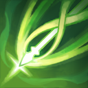
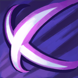
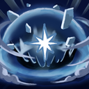
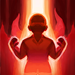
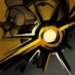
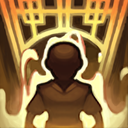
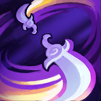
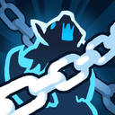
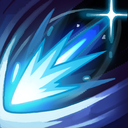

도깨비의세계 도술 티어 2026년 10월 11일 기준, 도술 스타일 12종 사냥 보스 PvP 용도별 추천
도깨비의세계 도술은 뭐가 제일 좋냐고 물으면 사람마다 답이 달라서, 한 장짜리 티어로 모아 봤어요. 깨비지지에는 티어표 페이지가 따로 없어요.
이 글은 제가 정리한 2026년 10월 11일 기준 잠정 티어표예요. 10월 8일에 오픈한 지 나흘째인 초반이라 티어는 얼마든지 바뀔 수 있고, 밸런스 패치에 따라 달라질 수 있어요. 공식은 도술 밸런스를 꾸준히 조정하고 임시 점검으로도 개선하겠다고 밝혔어요(라이브 방송 종합 안내). 사전예약 때는 하향보다 상향을 우선한다고 했지만 출시 전 안내예요(라이브 시연회 QnA 종합 안내).
결론부터 말하면 보스는 저격과 절명, 사냥은 점사(한 마리를 집중해서 잡는 방식)면 저격·절명, 몰이(몹을 모아 잡는 방식)면 파멸 쪽이에요.

사전예약 때 공개된 공식 도술 소개 삽화예요. 직업이 아니라 도술 스타일이 평가 단위가 돼요.
이미지: 도깨비의세계 공식 홈페이지(사전예약 페이지) · 네이버 본문엔 받아서 재업로드 권장
티어는 어떤 기준으로 매겼냐면요
서로 다른 종류의 출처 2곳 이상이 같은 쪽이면 칸을 채우고, 반대 의견이 있으면 칸에 함께 적어요. 한 곳뿐이거나 비슷한 비중으로 맞서면 의견 갈림·표본 부족, 하나도 없으면 비워 둬요.
- 깨비지지 유저 추천은 10월 11일 조회 기준 빌드 51건의 추천 수예요. 인기이지 성능 검증이 아니고, 상위 빌드 여럿이 같은 영상을 따라 했어요.
- 커뮤니티는 디시 도깨비의 세계 마이너 갤러리(10월 11일 조회) 글이고, 10월 10일 점검 뒤 글이 대부분이며 일부는 그 전 글이에요.
- 영상은 쌀신 영상 기준(10월 10일 게시, 본인이 잰 환경 조건)이고 점검 전에 올라왔어요.
- oslink는 스스로 잠정 추천도라고 밝힌 글이라 표본 하나로만 세고, 방향이 다르면 반대 의견으로 적었어요.
S·A·B는 성능 서열이 아니라 지금 많이 쓰이고 추천되는 정도예요. 10월 10일 점검에서 보스 회피가 50% 내려갔거든요(10월 10일 임시 점검 안내). 점검 전 자료가 포함돼 있어서 보스 칸은 더 달라질 수 있어요.
도술 스타일 용도별 티어는 어떻게 되나요?
갈림은 비슷한 비중으로 맞선 칸, 부족은 평가가 한 곳뿐인 칸, —는 평가라 할 만한 글이 없는 칸이에요.
2026년 10월 11일 기준 · 딜 스타일 7종 용도별 잠정 티어
| 스타일 | 사냥 | 보스·레이드 | PvP | 근거(출처 N곳 일치)와 한 줄 이유 |
|---|---|---|---|---|
 저격 | S | S | A | 보스 2곳(깨비지지·커뮤니티), 사냥 3곳(깨비지지·커뮤니티·oslink), PvP 2곳(깨비지지·커뮤니티) 일치. 보스 영상은 저격 세팅을 절명 조합으로 바꿨을 때 기준이에요. PvP는 점검 전(10월 9일 밤) 글이 포함돼 신뢰가 낮아 A로 조정. |
 절명 | A | S | 갈림 | 보스 3곳(깨비지지·커뮤니티·영상), 사냥 2곳(깨비지지·커뮤니티) 일치. oslink 글은 절명을 사냥 주력이 아니라 조작·지원 목적에 맞춰 고르는 계열로 분류했어요(잠정 추천도라 방향은 그대로 뒀어요). PvP는 깨비지지의 긍정과 점검 전 글의 부정이 맞섬. |
 파멸 | A(몰이) | 갈림 | 부족 | 사냥 3곳(깨비지지·커뮤니티·oslink) 일치, 다만 몰이·비경 한정. 보스는 방향이 엇갈림. |
| 주술 | B(비경) | 부족 | 갈림 | 사냥은 깨비지지·커뮤니티에서 많이 보이나 반대 글도 있어요. 비경·파밍 한정. |
 연타 | B | 부족 | 부족 | 사냥 3곳(깨비지지·커뮤니티·oslink) 일치, 다만 후기가 한두 건이라 신뢰 낮음. |
| 강타 | 부족 | 부족 | — | 깨비지지 51건 중 4건, 평가는 한 곳뿐. |
 척살 | — | 부족 | — | 깨비지지 0건, 보스 평가는 oslink 한 곳뿐. PvP는 설명과 한 줄 댓글뿐이라 평가라 할 글이 없음. 도술 상점에서는 살 수 없음. |
2026년 10월 11일 기준 · 많이 쓰이고 많이 추천되는 정도의 요약
이미지: 스타일 대표 아이콘 서고 3415·3431·3433 (출시 전 서고 캡처) · 미리보기 전용이라 네이버 본문 표에는 도술 이름만 들어가요
PvP 칸은 깨비지지 빌드 51건 중 3건에서만 나와 저격만 채웠어요. 구조는 도깨비의세계 PvP 콘텐츠 4종 총정리에 풀어 뒀어요.
스타일별 평가가 왜 그렇게 나왔는지 궁금하다면
- 저격 S는 깨비지지 상위 15개 빌드 중 11개에 들어 있고 사격·이중 사격 등 저격 도술이 51건 중 18~30건에 담겼어요. 짝은 거의 절명이에요. 저격 조각은 도술 상점에서 판다고 상인회 가이드에 적혀 있고, 이 도술 상점 목록에는 절명이 없어요.
- 절명 S(보스)는 보스·DPS용 17건에 전부 들어 있어요. 영상은 제목에 보스 DPS 20% 이상을 걸었고 설명란에는 약 10만 전투력의 9강 저격 세팅을 절명 신식·암습 조합으로 변경했을 때 20% 이상 올랐다고 적었어요. 저격 단독보다 절명 병행이 높다는 근거예요. 어디서 쟀는지(허수아비인지 보스인지)는 설명란에 적혀 있지 않아요.
- 파멸 A(몰이)는 깨비지지 추천 2위인 이용자 빌드 «몹몰이 광역 빌드»가 대폭발 궁극기를 쓰고, 커뮤니티에서도 비경·제자리 사냥은 파멸과 주술이라는 말이 많아요. 반대로 필드 점사는 저격과 절명이 낫다는 의견도 있어요. 파멸 궁극기 대폭발은 5명 이상 맞히면 피해량이 줄어든다고 공식 팁에 적혀 있어요(동일 스타일 3조합 = 1궁극기).
- 주술 B는 영혼 소용돌이가 51건 중 10건에서 파멸과 묶이지만 반대 글도 있어요. 척살·주술·강인은 도술 상점에서는 살 수 없고 단 봉인해제(입문 임무를 마치면 열리는 성장 콘텐츠)·도사 수행록 순위 보상 등 각종 콘텐츠에서 조각을 얻는다고 도술 가이드에 적혀 있어요.
유틸·제어 스타일은 보조로 얼마나 쓰이나요?
헌신은 사냥 보조로 가장 많이 쓰이고 나머지는 평가가 거의 없어요.
2026년 10월 11일 기준 · 유틸·제어 스타일 5종 보조 채용
| 스타일 | 보조로 쓰이는 방식 | 근거(출처 N곳 일치) |
|---|---|---|
 헌신 | 사냥은 1~2개, 보스는 힐 대신 딜 도술 | 2곳(깨비지지·커뮤니티), 상위 15개 빌드 중 6개. 10월 9일 패치로 즉시 회복 2,800·지속 회복 1초당 400이 고정으로 더해졌어요(임시 점검 및 패치 안내). |
 기만 | PvP에서 주술과 묶는 서포트 | 2곳(커뮤니티·oslink), 깨비지지는 0건. |
 제압 | — | 평가가 거의 없음(깨비지지 2건) |
 기동 | — | 평가가 거의 없음(깨비지지 1건) |
| 강인 | — | 평가가 거의 없음(깨비지지 1건) |
2026년 10월 11일 기준 · 보조 채용 정도의 요약이라 딜 티어와 섞지 않았어요
이미지: 스타일 대표 아이콘 서고 3415·3431·3433 (출시 전 서고 캡처) · 미리보기 전용이라 네이버 본문 표에는 도술 이름만 들어가요
지금 시작한다면 무엇부터 올리면 되나요?
강화는 스타일 단위로 한꺼번에 오르니 주력 스타일 하나에 요령서를 모아 올리는 쪽이 공식 가이드와 잘 맞아요.
- 같은 스타일 안이면 못 얻은 도술까지 일괄로 오르고, 요령서도 스타일별로 따로예요(성장 가이드). 각성은 도술마다 따로 해야 한다고 적혀 있어요.
- 궁극기는 하단 5칸에 같은 스타일 도술을 3개 이상 넣어야 켜지니까, 주력 하나에 보조 한두 칸이 기본 모양이에요.
도술 화면 상단 «선호 도술» 버튼을 누르면 장착한 도술을 집계한 공식 참고 순위가 떠요(도술 가이드).
도술 화면의 선호 도술 팝업이에요(10월 11일 시점).
자주 묻는 질문
Q. 도깨비의세계 PvP 도술 추천은 뭔가요?
아직 합의된 답이 없어요. 사거리 8인 저격에 절명을 붙여 빨리 잡자는 쪽과, 주술에 기만을 붙여 장판과 이동속도 감소로 막자는 쪽이 맞서요.
Q. 스타일별 DPS 차이는 얼마나 되나요?
공개된 자료 중 스타일끼리 실측 DPS를 비교한 건 영상 한 건 정도가 눈에 띄어요. 보스 회피 하향(10월 10일)과 헌신 회복 패치(10월 9일)가 스타일별 순위를 얼마나 바꿨는지는 아직 알 수 없어요.
Q. 도술을 잘못 올리면 되돌릴 수 있나요?
출시 뒤 공지(라이브 방송 종합 안내)에는 도술 초기화를 바로 제공하기는 어렵고 대신 요령서와 가호의 정수를 얻는 길을 넓힌다고 적혀 있어요. 요령서를 몰아주는 건 다음 패치 공지를 본 뒤가 안전해요.
도깨비의세계 도술 티어 정리
처음이라면 저격과 절명 중 하나를 주력으로 잡고 사냥용 헌신을 한두 칸 곁들이는 쪽이 가장 많이 겹치는 선택이에요. 밸런스 패치에 따라 달라질 수 있으니 다음 패치 공지가 나오면 다시 정리해 올리겠습니다. 천천히 올리셔도 늦지 않습니다.
✔ 도깨비의세계 같이 보기 좋은 내용
· 도깨비의세계 직업 없다? 도술 스타일 12가지 4계열로 조합하는 법
· 도깨비의세계 PvP 콘텐츠 4종 총정리
· 도깨비의세계 도술 조합 추천 유저 추천 빌드 7개, 암습 빌드 시전 순서와 도술 슬롯 해금 조건 (10월 10일 글)
· 도깨비의세계 무기 추천, 무기 5종 고르는 기준과 장비 강화 개방 돌파 각성 순서 (10월 10일 글)
참고한 곳
· 라이브 방송 종합 안내(12167)
· 10월 10일 임시 점검 안내(12257)
· 성장 가이드(7739)
조회한 곳(비공식)
· 깨비지지 도술 덱 빌더 · 10월 11일 조회
· 도술 조합 영상 · 10월 10일 게시
· 게임와이 도술 12계열 공략 · 10월 7일
· oslink 티어 리스트 · 10월 9일